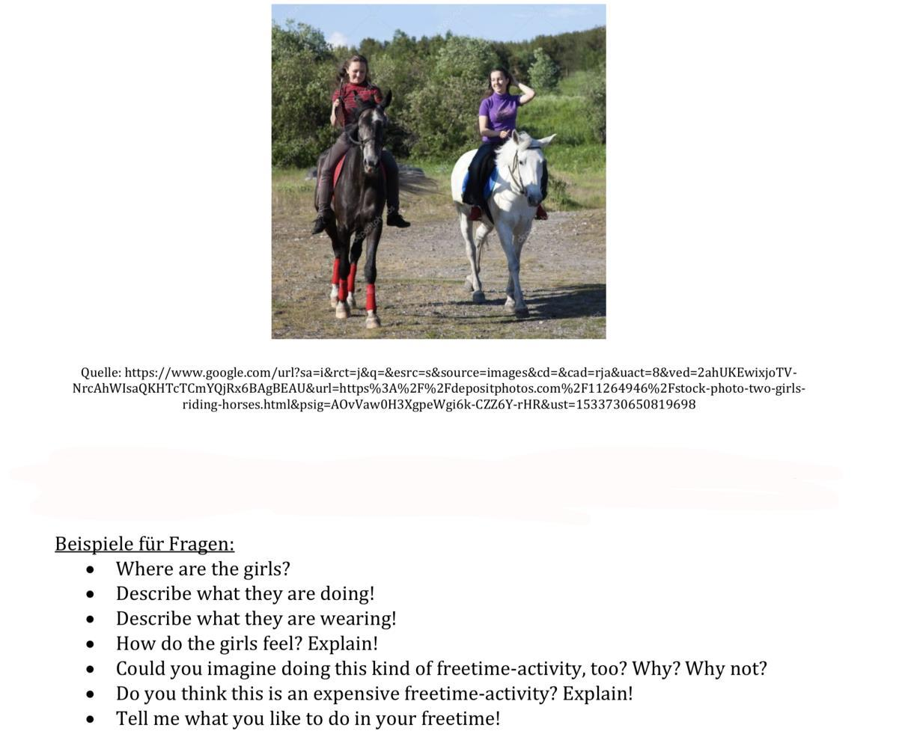
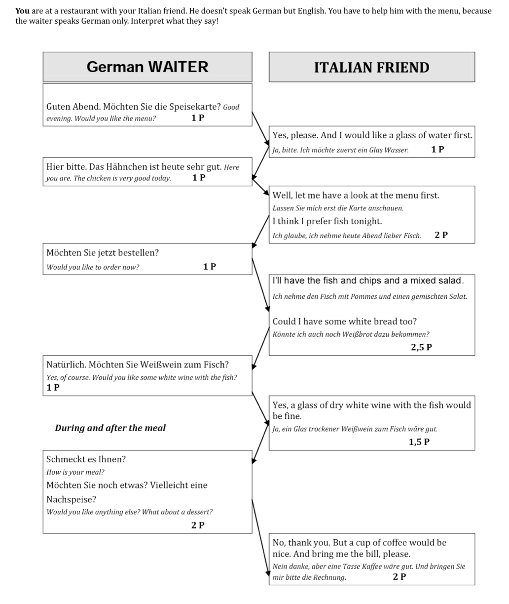

QA m?ndlich - Englisch
Aus PDF ?bernommen: Fragen, Ablauf und Materialien f?r die m?ndliche Pr?fung.
← Zur StartseiteSeite 1
1. PICTURE BASED-TALK
Der Ablauf:
• du erhälst ein Bild zu einem Thema
• du hast 30 Sekunden Zeit, um dich mit dem Bild auseinanderzusetzen
• Die Lehrkräfte stellen bildbezogene Fragen. (Diese beziehen sich auf die im Bild dargestellten
Aspekte).
• Die Lehrkräfte stellen weiterführende Fragen. (Diese beziehen sich nicht mehr direkt auf den
Bildinhalt, gehen jedoch vom Bild aus.)
• wichtig: Phrasen verwenden (Im Vordergrund, auf der linken Seite, in my opinion, etc.)
• sei immer wachsam, oft geben Prüfer unbeabsichtigt versteckte Tipps oder sogar Vokabeln preis!
Vorbereiten:
✓ üben lässt sich dieser Prüfungsteil sehr gut mit einem Freund/ einer Freundin
✓ nehmt euch am besten detailreiche Bilder z.B. aus einer Zeitung oder dem Internet
✓ schreibt zusammen alle Begriffe heraus, die ihr benötigt um das Bild zu beschreiben
✓ dann dem anderen das Bild mit den zuvor gefundenen Vokabeln beschreiben
Beispiel:


Seite 2
2. TOPIC-BASED-TALK
Der Ablauf:
• Du bekommst eine Mindmap mit einem Thema in der Mitte und 6 Unterthemen
• kurze Vorbereitungszeit von 90 Sekunden
• du kannst dir Notizen machen!
• aus 6 Teilaspekten insgesamt 3 auswählen!
• eigene Meinung zum Thema haben und den Prüfer möglichst nicht zum Fragen kommen lassen
Vorbereiten:
✓ Inhalte der Units gut können > Mindmaps zu den Themenbereiche strukturieren
✓ laut sprechend in Englischer Sprache berichten
✓ Versuche 3-5 Minuten in Englisch über ein Thema zu sprechen, das ist länger als du denkst!
✓ einige besondere / themenspezifische Vokabeln wissen
My topic is „Holiday“ and I’d like to talk about the subtopics means of transport, money and costs and recreation.
First of all… Let’s go on with… What I want to add…
What is also important… You should always think about… This subtopic leads me to …
When Talking about holidays you also have to mention… Spending time abroad...
In my opinion… In my last holiday I went to …. My dream holidays would be …
Mögliche Themen:
Life in a big city School Free time Australia India New Zealand
Part-time jobs Mobile phones South Africa Sports English language

Seite 3
3. INTERPRETING
Der Ablauf:
• du sollst zeigen, dass du in Alltagssituationen aus dem Englischen ins Deutsche bzw. aus dem
Deutschen ins Englische dolmetschen kannst
• zuerst wird dir die Situation in englischer Sprache kurz mündlich vorgestellt
• die Lehrkräfte tragen die einzelnen Gesprächsteile abwechselnd vor
• hast du etwas nicht verstanden, frage höflich nach, damit dir der Dialogpartner den Satz noch
einmal sagt
Tipps:
✓ gut zuhören und inhaltlich genau übersetzen!
✓ kennst du eine Vokabel nicht, umschreibe das Wort auf Englisch
Beispiel
